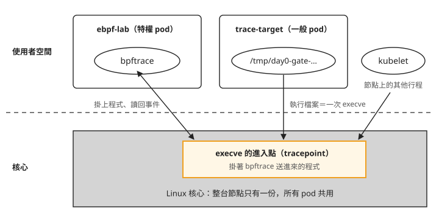
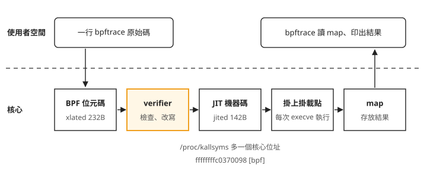
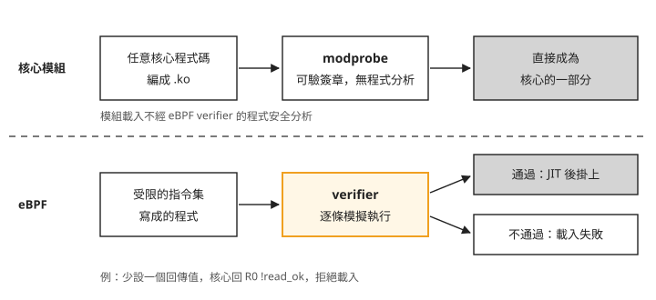
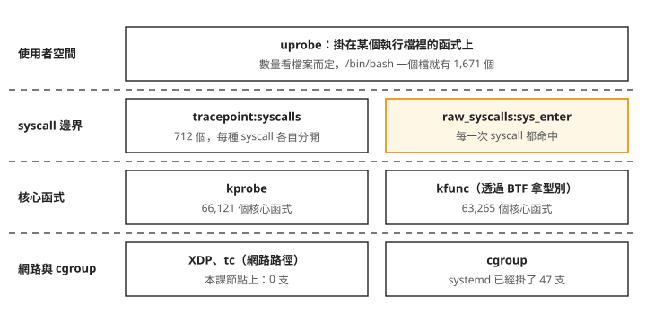
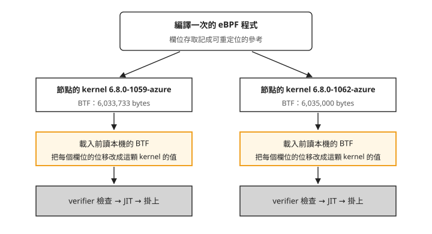

Day 0: eBPF 是什麼——程式怎麼進到核心、verifier 擋什麼、掛在哪裡比較貴¶


前一個 sprint 處理 GPU 資源配置，這個 sprint 轉向觀察節點與容器執行時的行為。同一台節點上跑著一顆你沒寫過、也不能改的 pod。你想知道它剛剛執行了哪些程式，但不想改它的映像、不在它裡面裝東西，也沒辦法 SSH 進節點。這個 sprint 後面要用的 Falco、Tetragon、Cilium 都在做類似的事，而它們的安裝說明都會要求特權容器、要求節點的 kernel 有 BTF（BPF Type Format），也就是描述核心資料結構與函式型別的資訊。這些要求都來自它們共同的基礎：eBPF。
這一章會用到 bpftrace：一個命令列工具，你用一行簡短的腳本描述要掛在哪裡、觸發時做什麼，它負責把腳本編譯成 eBPF 程式並載入核心。bpftrace 把掛在某個掛載點上的程式叫做探針（probe）。這一章先部署一顆特權 pod，用一行 bpftrace 看到另一顆 pod 執行的檔案，再回頭看這一行在核心裡變成了什麼：誰負責檢查它、它能掛在哪些位置、掛在不同位置要付出多少效能，以及同一支程式為什麼換一台節點還能跑。
核心裡負責檢查 eBPF 程式的元件叫 verifier，它在載入時分析程式是否會越界存取、能否結束。讀完之後，遇到 eBPF 工具裝不起來、探針掛不上，或掛上之後節點變慢，你能分辨問題出在 pod 的權限與掛載、verifier 拒絕載入，還是探針掛在太常被觸發的位置。
只有核心看得到每一顆 pod 在做什麼¶
一台 Linux 機器上，最底層的程式是核心（kernel），它管 CPU、記憶體、網卡和磁碟。其他程式都跑在核心之上，這一層叫使用者空間（user space）。使用者空間的程式不能直接碰硬體，要開檔案、送封包、執行另一個程式，都得請核心代勞，這種請求叫 system call（系統呼叫）。執行一個程式用的 system call 叫 execve。
容器沒有改變這件事。同一台節點上的每一顆 pod 用的是同一個核心，pod 之間彼此看不到，這種隔離也是核心做的。所以不管哪一顆 pod 執行程式，最後都會進到核心裡同一段 execve 的程式碼。想知道「這台節點上誰執行了什麼」，最直接的位置就在核心裡。
要在核心裡加上自己的程式，傳統做法是寫一個核心模組（kernel module）載進去。模組載入之後就是核心的一部分，寫錯一行就可能讓整台機器當掉。eBPF 是另一種做法：你把一小段程式交給核心，核心先檢查它安不安全，通過了才把它掛在你指定的位置；之後核心每次執行到那個位置，就順便執行你的程式。這些可以掛程式的位置叫掛載點（hook）。
網頁上的 JavaScript 和瀏覽器的關係可以拿來對照：JavaScript 跑在瀏覽器裡，但只能呼叫瀏覽器開放的 API，只能在瀏覽器允許的事件上執行，也不能直接改瀏覽器的記憶體。eBPF 程式和核心也是這樣：核心提供執行環境、一組可以呼叫的函式（叫 helper），以及由核心決定開在哪裡的掛載點。
eBPF 是從 tcpdump 用來過濾封包的 BPF 擴充而來，核心和工具裡多半還是叫它 BPF，後面的輸出看到 bpf、BPF 指的都是同一件事。
步驟 1：準備一顆看得到節點的特權 pod¶
AKS 預設不開放節點的 SSH。要從節點的角度載入 eBPF 程式，標準做法是開一顆特權 pod：容器拿到和節點上 root 一樣的權限，再透過它操作節點的核心。
先開一個 CPU 節點池，eBPF 不需要 GPU。指令裡的 <cluster>、<resource-group>、<subscription-id> 換成你自己的叢集名稱、資源群組與訂閱 ID：
$ az aks nodepool add -g <resource-group> --cluster-name <cluster> -n ebpf \
--subscription <subscription-id> \
--node-count 2 --node-vm-size Standard_D2as_v5 \
--priority Spot --eviction-policy Delete --spot-max-price -1 \
--labels pool=ebpf
本課的節點是 Ubuntu 24.04、kernel 6.8.0-1062-azure。你開出來的節點映像可能比較新，後面各項數字會有些出入。
特權 pod 寫成 DaemonSet，讓每台節點各跑一顆。它只需要四項設定：privileged: true 給容器完整權限；hostPID: true 讓容器看得到節點上所有行程；/sys 和 /sys/kernel/debug 兩個 hostPath 讓容器讀得到核心公開的資訊。/sys/kernel/debug 是 debugfs 的掛載位置，debugfs 是核心用來公開除錯與追蹤資訊的特殊檔案系統，bpftrace 要從這裡讀出可以掛的位置清單。
cat > 01-ebpf-lab-daemonset.yaml <<'EOF'
apiVersion: v1
kind: Namespace
metadata:
name: ebpf-lab
---
apiVersion: apps/v1
kind: DaemonSet
metadata:
name: ebpf-lab
namespace: ebpf-lab
labels:
app: ebpf-lab
spec:
selector:
matchLabels:
app: ebpf-lab
template:
metadata:
labels:
app: ebpf-lab
spec:
hostPID: true
nodeSelector:
pool: ebpf
tolerations:
- key: kubernetes.azure.com/scalesetpriority
operator: Equal
value: spot
effect: NoSchedule
containers:
- name: probe
image: mcr.microsoft.com/mirror/docker/library/ubuntu:24.04
command: ["sleep", "infinity"]
securityContext:
privileged: true
resources:
requests:
cpu: 50m
memory: 128Mi
volumeMounts:
- name: sys
mountPath: /sys
- name: debugfs
mountPath: /sys/kernel/debug
volumes:
- name: sys
hostPath:
path: /sys
type: Directory
- name: debugfs
hostPath:
path: /sys/kernel/debug
type: Directory
EOF
映像用的是 MCR（Microsoft Container Registry）上的 Ubuntu 官方映像的同步副本，不直接從 Docker Hub 拉，避免卡在匿名拉取的速率限制。另外開一顆沒有任何特權的 trace-target，步驟 2 要在它裡面執行程式，讓特權 pod 去追蹤。它和特權 pod 用同一個映像、同一組 nodeSelector 與 toleration，只是少了 hostPID、privileged 和兩個 hostPath：
cat > 02-target-pod.yaml <<'EOF'
apiVersion: v1
kind: Pod
metadata:
name: trace-target
namespace: ebpf-lab
labels:
app: trace-target
spec:
nodeSelector:
pool: ebpf
tolerations:
- key: kubernetes.azure.com/scalesetpriority
operator: Equal
value: spot
effect: NoSchedule
containers:
- name: target
image: mcr.microsoft.com/mirror/docker/library/ubuntu:24.04
command: ["sleep", "infinity"]
resources:
requests:
cpu: 50m
memory: 64Mi
EOF
$ kubectl apply -f 01-ebpf-lab-daemonset.yaml -f 02-target-pod.yaml
$ kubectl -n ebpf-lab get pods -o wide
NAME READY STATUS NODE
ebpf-lab-g2g4r 1/1 Running aks-ebpf-80832270-vmss000001
ebpf-lab-rq6sg 1/1 Running aks-ebpf-80832270-vmss000000
trace-target 1/1 Running aks-ebpf-80832270-vmss000001
兩顆 ebpf-lab 各在一台節點上。步驟 2 要用的是和 trace-target 在同一台節點的那一顆，上面的輸出裡是 ebpf-lab-g2g4r。你的 pod 名稱會不同，對照 NODE 欄找出和 trace-target 同一台的那顆，後面指令裡的 <ebpf-lab-pod> 都換成它。
接著在這顆特權 pod 裡確認三件事：核心有沒有 BTF 型別資訊檔案、debugfs 有沒有掛進來、bpftrace 裝不裝得起來。下面的區塊從第二行起，... 代表第一行的 kubectl -n ebpf-lab exec <ebpf-lab-pod>，這樣寫是為了把指令和輸出對在一起。< 與 && 如果直接在你自己的電腦上打，會在本機執行，不會進到 pod 裡；所以實際操作時先進到 pod 的 shell，先更新套件清單，再在裡面執行 -- 後面的部分：
$ kubectl -n ebpf-lab exec <ebpf-lab-pod> -- ls -l /sys/kernel/btf/vmlinux
-r--r--r-- 1 root root 6035000 Aug 6 03:25 /sys/kernel/btf/vmlinux
$ ... -- mount | grep -c debugfs
2
$ ... -- wc -l < /sys/kernel/debug/tracing/available_events
2153
$ ... -- apt-get install -y bpftrace && bpftrace --version
bpftrace v0.20.2
BTF 檔案在，debugfs 掛進來了，available_events 是核心列出的掛載點清單，讀得到 2,153 行。bpftrace 裝在容器自己的檔案系統裡，節點上的檔案沒有被改動，pod 刪掉就跟著消失。
步驟 2：在另一顆 pod 裡看到你執行的檔案¶
這一步用的 bpftrace 只有一行：
tracepoint:syscalls:sys_enter_execve是掛載點的名字，意思是「每次有程式呼叫execve、剛進入核心的那一刻」。- 大括號裡是每次觸發時要做的事：印出行程編號（
pid）、行程名稱（comm），以及要執行的檔名。
這一步的安排畫成圖是這樣，上半部是兩顆 pod 裡的程式，下半部是它們共用的核心：

照著箭頭看：bpftrace 把程式掛到核心的 execve 進入點；trace-target 執行檔案時會經過這個點，節點上 kubelet 這類行程執行程式時也一樣，所以掛在那裡的程式全部看得到。
節點上本來就有其他行程不斷在執行 ls 之類的指令，隨便跑一個 ls 沒辦法確定看到的是自己那一筆。所以先造一個這台機器上不可能有第二份的檔名，再到另一顆 pod 裡執行它。A 那行在 <ebpf-lab-pod> 裡執行並保持執行；另開一個終端機進 trace-target，在那邊設定 MARK 並執行 B 那行。進入兩顆 pod 的指令分別是：
kubectl -n ebpf-lab exec -it <ebpf-lab-pod> -- bash # A
kubectl -n ebpf-lab exec -it trace-target -- bash # B
兩邊要執行的內容如下：
MARK="day0-gate-$(date '+%H%M%S')" # a filename nothing else on this node has
# A: the privileged pod attaches the probe
bpftrace -e 'tracepoint:syscalls:sys_enter_execve {
printf("%-6d %-16s -> %s\n", pid, comm, str(args.filename)); }' -o /tmp/gate.out
# B: another pod on the same node runs that file
cp /bin/echo /tmp/$MARK && /tmp/$MARK hello-from-trace-target
做完 B，回到 A 按 Ctrl-C 結束 bpftrace，再到輸出檔裡找你那個檔名。<HHMMSS> 只填你在 trace-target 裡設定的 MARK 最後六位時間，例如 MARK 是 day0-gate-112742，就填 112742；搜尋模板已經有 day0-gate- 前綴：
$ kubectl -n ebpf-lab exec <ebpf-lab-pod> -- grep -n 'day0-gate-<HHMMSS>' /tmp/gate.out
32:7826 bash -> /tmp/day0-gate-112742
這一行輸出可以讀出三件事：
- 探針看得到別的 pod。 探針跑在特權 pod 裡，被記錄的動作發生在
trace-target。兩顆 pod 各自隔離，但 eBPF 程式掛在核心的execve進入點，那是所有容器共用的同一段程式碼。 - PID 是節點上的編號。 7826 是節點看到的行程編號，不是
trace-target容器裡看到的號碼。 comm是bash。 進入execve的那一刻，行程還是原本的bash，只是要執行的檔名換成了新的。
同一份輸出裡其他幾十筆都是節點自己的活動，其中有 7793 kubelet -> /usr/sbin/ip6tables 和 7794 kubelet -> /usr/sbin/iptables。也就是說，在一顆 pod 裡跑一行指令，就看得到 kubelet 呼叫 iptables。能掛探針的容器看得到整台節點上所有行程的動作，這是後面每一章討論權限時的起點。反過來，把同一行交給沒有特權的 pod，會拿到一則容易誤解的錯誤，見對照實驗：一般 pod 裡回 tracepoint not found。
這一行在核心裡變成了什麼¶
要看核心裡載入了哪些 eBPF 程式，用的是 bpftool，它是 Linux 核心專案自己附的管理工具。AKS 節點上內建一支，所以不在容器裡裝，而是從特權 pod 借用節點的檔案系統去執行它：
nsenter -t 1 -m 的意思是「進到節點上 1 號行程的檔案系統視角」，因為 pod 設了 hostPID: true，1 號行程就是節點本身的第一個行程。接下來的區塊為了好讀，只寫 bpftool 本身，前面這段前綴請自行補上。
先看還沒掛任何探針時，核心裡已經有幾支程式。grep -c 數的是以編號開頭的行，一行就是一支程式；第二個指令把程式依種類分組：
$ bpftool prog list | grep -cE '^[0-9]+:'
52
$ bpftool prog list | grep -oE '^[0-9]+: [a-z_]+' | awk '{print $2}' | sort | uniq -c | sort -rn
41 cgroup_device
6 cgroup_skb
1 tracing
還沒裝任何追蹤工具，節點上就已經有 52 支。分組和計數不是同一刻取的，加起來對不上 52 是正常的。這些程式是誰放的，掛載點那一節再看。
bpftrace 跑著的時候再列一次。下面這次跑的是一支同時統計 execve 與 openat 次數、每秒印一次結果的 bpftrace（腳本本身不在本章，@opens 就是它統計 openat 用的變數），程式總數從 52 變成 55。這一節後面的幾段輸出來自不同次執行，程式與 map 的編號（46、56、68、488）因此對不起來，對照時看名稱就好：
$ bpftool prog list | grep -A1 -E '^[0-9]+: (tracepoint|perf_event)'
470: tracepoint name tracepoint_syscalls_sys_enter_openat tag afe1b01453072a6e gpl
xlated 232B jited 142B memlock 4096B map_ids 46
471: tracepoint name tracepoint_syscalls_sys_enter_execve tag afe1b01453072a6e gpl
xlated 232B jited 142B memlock 4096B map_ids 45
472: perf_event name 1 tag 8c75940e7e21306d gpl
xlated 192B jited 117B memlock 4096B map_ids 47
一行 bpftrace 變成三支獨立的核心程式：兩支掛在 tracepoint 上，一支是每秒觸發一次的計時器（perf_event）。每一支的第二行都有兩個長度：
xlated 232B是位元碼的長度。eBPF 程式送進核心時是一種虛擬的指令格式，核心看得懂，CPU 不能直接執行。jited 142B是 JIT 之後的長度。JIT 指核心在載入時把位元碼翻成這台 CPU 的機器碼，之後每次觸發都直接執行機器碼。
兩個長度並排出現，代表 JIT 確實做了。tag afe1b01453072a6e 是位元碼內容的雜湊值，map_ids 等一下再講。
JIT 產生的機器碼會登記在核心的符號表 /proc/kallsyms 裡：
$ grep bpf_prog /proc/kallsyms | grep -i execve
ffffffffc0370098 t bpf_prog_afe1b01453072a6e_tracepoint_syscalls_sys_enter_execve [bpf]
ffffffffc0370098 是一個真實的核心位址，[bpf] 標明它來自 eBPF，符號名裡的 afe1b01453072a6e 就是上面的 tag。AKS 節點的 kernel 編譯時把 JIT 設成永遠開啟（CONFIG_BPF_JIT_ALWAYS_ON=y），JIT 不能關掉，所以網路上常見的「先確認 net.core.bpf_jit_enable=1」這一步可以跳過。
把這一段畫成圖，左上是你寫的那一行，沿著箭頭一路走到右上的輸出：

我們可以從圖上看到兩件事。第一，位元碼和機器碼之間隔著 verifier，沒有通過它的程式到不了 JIT 這一步，下一節專門講它。第二，結果回到使用者空間只有一條路：核心裡的程式不能直接把字印到終端機，只能寫進 map，再由使用者空間的 bpftrace 去讀。map 是核心裡的一塊記憶體，核心裡的程式和使用者空間的程式都能存取。
先讓探針保持執行，在同一台節點查 bpftool prog list，用程式名稱找出目標探針，記下行首的程式 ID 與它的 map_ids。再用下面的 bpftool map list 找 AT_opens，確認它的 ID 出現在目標程式的 map_ids 裡。若有多支同名探針，先比對掛探針前後的清單，找出這次新增的物件。
下面的清單與 show 是不同次執行的紀錄。操作時，將 bpftool map show id 56 的 56 換成你剛查到的 map ID；不要直接沿用範例數字：
$ bpftool map list | grep -E '^[0-9]+:'
46: percpu_hash name AT_opens flags 0x0
48: ringbuf name ringbuf flags 0x0
$ bpftool map show id 56
56: percpu_hash name AT_opens flags 0x0
key 16B value 8B max_entries 4096 memlock 427008B
bpftrace 把腳本裡的 @opens 變成名叫 AT_opens 的 map（@ 換成 AT_）。那個 ringbuf 也是 bpftrace 建的，用來送出 printf 這類逐筆事件，所以同一支程式用了兩種回傳方式：統計數字放 map，逐筆事件走 ring buffer。ring buffer 是一段環狀的緩衝區，核心依序寫入事件，使用者空間依序讀出。
map show 的第二行是這個 map 的規格：
key 16B：key 存的是行程名稱，Linux 的行程名稱最長就是 16 bytes。value 8B：一個 64 位元的計數器。max_entries 4096：map 有容量上限，第 4,097 個不同的行程名稱會被丟掉。memlock 427008B：這一個計數用的 map 就佔了 417 KB 的核心記憶體。
保持同一支探針執行，把 map 裡的原始內容印出來。下方 bpftool map dump id 56 的 56 也要換成剛才確認的 map ID，和 show 查同一個 map：
$ bpftool map dump id 56
key:
63 6f 6e 74 61 69 6e 65 72 64 00 00 00 00 00 00
value (CPU 00): 84 00 00 00 00 00 00 00
value (CPU 01): b6 02 00 00 00 00 00 00
63 6f 6e 74 61 69 6e 65 72 64 是 containerd 這幾個字母的編碼。map 裡沒有「字串」這種型別，只有固定長度的位元組，16 bytes 的 key 不夠長的部分補零。value (CPU 00) 和 value (CPU 01) 兩行，是因為這個 map 的類型是 percpu_hash：每顆 CPU 各有一份計數器，在核心裡加一時不必和其他 CPU 搶同一個位置，使用者空間要看的時候才把各 CPU 的值加總。這台機器有兩顆 vCPU，所以是兩行。
bpftrace 結束時印出的 @opens[kubelet]: 1759、@opens[containerd-shim]: 10499 這類統計，讀的就是這個 map。程式的 map_ids 指向它，bpftool map dump 看到的是位元組，bpftrace 看到的是「行程名稱對應次數」，三者是同一塊記憶體。
這些程式和 map 什麼時候會被移除，看的是有沒有行程還開著它們的檔案描述子（fd）：bpftrace 行程結束，核心就把它載入的程式收回。行程如果沒有真的結束，程式就一直掛著。
誰保證它不會把機器弄壞：verifier¶
開頭提過，把程式放進核心原本就做得到，用的是核心模組。在同一顆特權 pod 裡實際載入一個看看。dummy 是核心自帶的假網路裝置模組，載入和卸載都不會影響節點。這幾行和 bpftool 一樣，要加上 nsenter -t 1 -m -- 前綴，在節點的檔案系統裡執行：
$ lsmod | tail -n +2 | wc -l
82
$ modprobe dummy
(沒有任何輸出)
$ lsmod | grep '^dummy'
dummy 16384 0
$ rmmod dummy
(沒有任何輸出)
節點上已經載入了 82 個模組，modprobe 一行就多載入一個。沒有輸出不代表沒有檢查：核心載入模組時可依設定驗證簽章，見 Linux 核心模組簽章文件。這類檢查不包含 eBPF verifier 那種程式安全分析。模組裡的程式碼是完整的核心程式碼，可以讀寫任何記憶體，也可以讓整台機器停擺。
換成 eBPF 的載入方式。下面這支程式只有一條指令：直接結束（exit），沒有先設定回傳值。正常的程式在結束前要把回傳值放進 r0 這個暫存器，這支少了這一步，核心拒絕載入，回傳錯誤碼 13（EACCES，權限不足）：
拒絕它的是核心裡的 verifier：每一支 eBPF 程式在載入前都要通過它的檢查，不通過就載入失敗。兩條載入路徑畫在一起，上面是核心模組，下面是 eBPF：

兩條路的差別在中間那一格。核心模組載入時可做簽章驗證，eBPF 則會經過 verifier 分析程式的執行路徑與記憶體存取。代價寫在下面那條路的第一格：eBPF 只能用受限的指令集，能做的事比核心模組少得多。這個 sprint 的所有工具都在這個限制下運作，程式寫錯時，載入會失敗，已經在跑的核心不受影響。
verifier 怎麼檢查¶
用 bpftrace 幾乎寫不出會被 verifier 拒絕的程式：永遠不會結束的迴圈會在編譯時被編譯器刪掉，太長的字串在 bpftrace 自己這一層就被擋下（'BPFTRACE_MAX_STRLEN' 512 exceeds the current maximum of 200 bytes），讀取任意位址則會被包成「試著讀，失敗就回 0」的安全讀取。日常使用這是好事，但也表示只用 bpftrace 看不到 verifier 的檢查過程。
所以這一節的例子改用 Python 直接呼叫 bpf() 這個 system call，把手寫的位元碼送進核心。這樣做時如果核心回傳錯誤，但 verifier 的紀錄（log）是空的，代表程式根本還沒進到 verifier，該查的是 system call 的呼叫方式（例如位址傳錯），不是程式本身。判斷條件是：log 有內容，代表程式進到了 verifier，問題在程式；log 空白、錯誤碼又是 EFAULT 或 EINVAL，代表程式還沒進到 verifier，問題在呼叫方式。
這兩支腳本要在步驟 1 的特權 pod 內執行，容器內需有 Python 3，節點架構必須是 x86_64；腳本把這個架構的 bpf() system call 編號寫成 321。將下列內容分別存成 pod 內的 /tmp/06-verifier-raw-bpf.py 與 /tmp/07-verifier-raw-bpf-round2.py，在 pod 的 shell 依序執行 python3 /tmp/06-verifier-raw-bpf.py、python3 /tmp/07-verifier-raw-bpf-round2.py。腳本內容沿用驗證素材，執行後會逐案印出載入結果與 verifier log。
第一支包含合法對照組、未初始化暫存器、迴圈與 stack 存取案例：
#!/usr/bin/env python3
"""Day 0 item (c): call bpf(BPF_PROG_LOAD) directly and print the kernel verifier's log.
bpftrace never lets a bad program reach the verifier (front-end limits, LLVM, and
bpf_probe_read wrapping all intervene first), so to SEE the verifier we hand-assemble
BPF bytecode and make the syscall ourselves. No compiler, no headers, no libbpf.
"""
import ctypes, struct, os
NR_BPF = 321 # x86_64
BPF_PROG_LOAD = 5
BPF_PROG_TYPE_SOCKET_FILTER = 1
BPF_ALU64, BPF_JMP, BPF_LDX, BPF_STX = 0x07, 0x05, 0x01, 0x03
BPF_MOV, BPF_K, BPF_EXIT, BPF_JA = 0xb0, 0x00, 0x90, 0x00
BPF_MEM, BPF_DW = 0x60, 0x18
MOV64_IMM = BPF_ALU64 | BPF_MOV | BPF_K # 0xb7
EXIT = BPF_JMP | BPF_EXIT # 0x95
JA = BPF_JMP | BPF_JA # 0x05
LDX_DW = BPF_LDX | BPF_MEM | BPF_DW # 0x79
STX_DW = BPF_STX | BPF_MEM | BPF_DW # 0x7b
libc = ctypes.CDLL("libc.so.6", use_errno=True)
# argtypes are mandatory: without them ctypes narrows pointer args to 32 bits and
# every bpf() call comes back EFAULT.
libc.syscall.restype = ctypes.c_int
libc.syscall.argtypes = [ctypes.c_long, ctypes.c_long, ctypes.c_void_p, ctypes.c_ulong]
def insn(code, dst=0, src=0, off=0, imm=0):
return struct.pack("<BBhi", code, ((src & 0xF) << 4) | (dst & 0xF), off, imm)
def prog_load(insns, name):
blob = b"".join(insns)
ibuf = ctypes.create_string_buffer(blob, len(blob))
lic = ctypes.create_string_buffer(b"GPL")
log = ctypes.create_string_buffer(262144)
attr = struct.pack(
"<IIQQIIQII16sII",
BPF_PROG_TYPE_SOCKET_FILTER, # prog_type
len(insns), # insn_cnt
ctypes.addressof(ibuf), # insns
ctypes.addressof(lic), # license
1, # log_level
len(log), # log_size
ctypes.addressof(log), # log_buf
0, # kern_version
0, # prog_flags
name.encode()[:15], # prog_name[16]
0, # prog_ifindex
0, # expected_attach_type
)
attr += b"\x00" * (128 - len(attr))
abuf = ctypes.create_string_buffer(attr, len(attr))
ctypes.set_errno(0)
fd = libc.syscall(NR_BPF, BPF_PROG_LOAD, ctypes.addressof(abuf), len(attr))
return fd, ctypes.get_errno(), log.value.decode(errors="replace")
CASES = [
("V0 合法對照組：r0 = 0; exit",
[insn(MOV64_IMM, dst=0, imm=0), insn(EXIT)]),
("R1 沒設定回傳值就 exit（r0 未初始化）",
[insn(EXIT)]),
("R2 無界迴圈：ja -1（跳回自己）",
[insn(MOV64_IMM, dst=0, imm=0), insn(JA, off=-1), insn(EXIT)]),
("R3 讀沒寫過的 stack（r10-8）",
[insn(LDX_DW, dst=0, src=10, off=-8), insn(EXIT)]),
("R4 越界 stack 存取（r10-600，stack 只有 512 bytes）",
[insn(STX_DW, dst=10, src=0, off=-600), insn(MOV64_IMM, dst=0, imm=0), insn(EXIT)]),
("R5 寫入唯讀的 frame pointer r10",
[insn(MOV64_IMM, dst=10, imm=0), insn(EXIT)]),
]
for title, prog in CASES:
print("#" * 70)
print("## " + title)
print("## 指令組（%d 條）: %s" % (len(prog), " ".join(b.hex() for b in prog)))
fd, err, log = prog_load(prog, "day0probe")
if fd >= 0:
print("## 結果: 載入成功，prog fd = %d" % fd)
os.close(fd)
else:
print("## 結果: 被拒絕，errno = %d (%s)" % (err, os.strerror(err)))
print("--- kernel verifier log ---")
print(log.strip() if log.strip() else "(空)")
print()
第二支補上會到達迴圈與越界檢查的案例，並各附一個合法對照組：
#!/usr/bin/env python3
"""Day 0 item (c), round 2: the two rejections round 1 missed.
Round 1's loop case was caught by the *pre-check* ("unreachable insn 2") before the
loop detector ever ran, and its out-of-bounds stack write tripped on an uninitialised
r0 first. Both are fixed here so the verifier reports the reason we were aiming at.
"""
import ctypes, struct, os
NR_BPF, BPF_PROG_LOAD, SOCKET_FILTER = 321, 5, 1
MOV64_IMM = 0xb7 # BPF_ALU64|BPF_MOV|BPF_K
ADD64_IMM = 0x07 # BPF_ALU64|BPF_ADD|BPF_K
JGT_IMM = 0x25 # BPF_JMP|BPF_JGT|BPF_K
JA = 0x05 # BPF_JMP|BPF_JA
STX_DW = 0x7b # BPF_STX|BPF_MEM|BPF_DW
EXIT = 0x95 # BPF_JMP|BPF_EXIT
libc = ctypes.CDLL("libc.so.6", use_errno=True)
libc.syscall.restype = ctypes.c_int
libc.syscall.argtypes = [ctypes.c_long, ctypes.c_long, ctypes.c_void_p, ctypes.c_ulong]
def insn(code, dst=0, src=0, off=0, imm=0):
return struct.pack("<BBhi", code, ((src & 0xF) << 4) | (dst & 0xF), off, imm)
def prog_load(insns, name):
blob = b"".join(insns)
ibuf = ctypes.create_string_buffer(blob, len(blob))
lic = ctypes.create_string_buffer(b"GPL")
log = ctypes.create_string_buffer(262144)
attr = struct.pack("<IIQQIIQII16sII", SOCKET_FILTER, len(insns),
ctypes.addressof(ibuf), ctypes.addressof(lic),
1, len(log), ctypes.addressof(log), 0, 0,
name.encode()[:15], 0, 0)
attr += b"\x00" * (128 - len(attr))
abuf = ctypes.create_string_buffer(attr, len(attr))
ctypes.set_errno(0)
fd = libc.syscall(NR_BPF, BPF_PROG_LOAD, ctypes.addressof(abuf), len(attr))
return fd, ctypes.get_errno(), log.value.decode(errors="replace")
CASES = [
("R2b 真正的無界迴圈：條件永遠不成立，但出口指令可達",
[insn(MOV64_IMM, dst=0, imm=0), # 0: r0 = 0
insn(JGT_IMM, dst=0, imm=10, off=1),# 1: if r0 > 10 goto 3
insn(JA, off=-2), # 2: goto 1 <- back-edge
insn(EXIT)]), # 3: exit
("R2c 有界迴圈對照組：同樣的 back-edge，但計數器真的會增加",
[insn(MOV64_IMM, dst=0, imm=0), # 0: r0 = 0
insn(JGT_IMM, dst=0, imm=10, off=2),# 1: if r0 > 10 goto 4
insn(ADD64_IMM, dst=0, imm=1), # 2: r0 += 1
insn(JA, off=-3), # 3: goto 1 <- back-edge
insn(MOV64_IMM, dst=0, imm=0), # 4: r0 = 0
insn(EXIT)]), # 5: exit
("R4b 越界 stack 寫入：r10-600，但 BPF stack 只有 512 bytes",
[insn(MOV64_IMM, dst=0, imm=0), # 0: r0 = 0
insn(STX_DW, dst=10, src=0, off=-600),
insn(EXIT)]),
("R4c 合法 stack 寫入對照組：r10-8",
[insn(MOV64_IMM, dst=0, imm=0),
insn(STX_DW, dst=10, src=0, off=-8),
insn(EXIT)]),
]
for title, prog in CASES:
print("#" * 70)
print("## " + title)
print("## 指令組（%d 條）: %s" % (len(prog), " ".join(b.hex() for b in prog)))
fd, err, log = prog_load(prog, "day0probe")
if fd >= 0:
print("## 結果: 載入成功，prog fd = %d" % fd)
os.close(fd)
else:
print("## 結果: 被拒絕，errno = %d (%s)" % (err, os.strerror(err)))
print("--- kernel verifier log ---")
print(log.strip() if log.strip() else "(空)")
print()
先送一支合法的兩行程式當對照組，設定 r0 = 0 再結束：
## V0 合法對照組:r0 = 0; exit —— 載入成功,prog fd = 3
--- kernel verifier log ---
processed 2 insns (limit 1000000) max_states_per_insn 0 total_states 0 peak_states 0 mark_read 0
limit 1000000 是 verifier 的上限：它最多檢查一百萬條指令，超過就放棄並拒絕載入。接著送進四支有問題的程式。表裡的錯誤碼 13 是 EACCES（權限不足），22 是 EINVAL（參數無效）；r10 是指向這支程式 stack 的暫存器，也叫 frame pointer，程式只能讀它、不能改它：
| 送進去的程式 | 核心的回覆 | 錯誤碼 |
|---|---|---|
沒設回傳值就 exit |
R0 !read_ok |
13 |
| 條件永遠不成立的迴圈 | infinite loop detected at insn 1 |
22 |
寫入 r10-600（stack 只有 512 bytes） |
invalid write to stack R10 off=-600 size=8 |
13 |
| 寫入唯讀的 frame pointer | frame pointer is read only |
13 |
第一則的 R0 !read_ok 意思是「r0 不可讀」，因為程式從來沒寫過它，可見 verifier 會追蹤每個暫存器有沒有被設定過。第三則連寫入的大小（size=8）都算進去了。eBPF 程式的 stack 上限是 512 bytes，這也是前面 bpftrace 限制字串長度的原因：字串放在 stack 上，512 這個數字是 verifier 訂的。
第二則的紀錄最能看出 verifier 怎麼做判斷。這支程式先把 r0 設成 0，然後不斷檢查「r0 大於 10 嗎」，不大於就跳回去再檢查一次（往回跳的指令叫 back-edge），而 r0 從頭到尾不會改變（原始紀錄繞了四圈，這裡節錄三圈）：
## R2b 真正的無界迴圈:條件永遠不成立,但出口指令可達 —— 被拒絕,errno = 22
--- kernel verifier log ---
0: R1=ctx() R10=fp0
0: (b7) r0 = 0 ; R0_w=0
1: (25) if r0 > 0xa goto pc+1 ; R0_w=0
2: (05) goto pc-2
1: (25) if r0 > 0xa goto pc+1 ; R0_w=0
2: (05) goto pc-2
1: (25) if r0 > 0xa goto pc+1 ; R0=0
2: (05) goto pc-2
infinite loop detected at insn 1
cur state: R0=0 R1=ctx() R10=fp0
old state: R0_rw=P0 R1=ctx() R10=fp0
processed 10 insns (limit 1000000) max_states_per_insn 0 total_states 1 peak_states 1 mark_read 1
verifier 並沒有真的執行這支程式，而是一條一條推算每個暫存器在那一刻可能是什麼值，這種做法叫符號執行。每一行分號後面的 R0_w=0 就是它推算的結果。繞了幾圈之後，cur state（現在的狀態）和 old state（上一圈的狀態）一模一樣，表示每繞一圈什麼都沒改變，這個迴圈不會結束，於是判定 infinite loop detected at insn 1。
同樣的 back-edge、同樣的跳躍指令，只把計數器改成每圈真的會加一：
## R2c 有界迴圈對照組:同樣的 back-edge,但計數器真的會增加 —— 載入成功
--- kernel verifier log ---
processed 37 insns (limit 1000000) max_states_per_insn 1 total_states 2 peak_states 2 mark_read 1
這次通過，verifier 檢查了 37 條指令。可見 verifier 允許迴圈，條件是它能證明迴圈會結束，判斷依據是每繞一圈狀態有沒有往前走。寫 eBPF 程式時，所有迴圈都要有看得出來的上限，原因就在這裡。
看 verifier 的紀錄還要知道一件事：它遇到第一個問題就停。如果你想測迴圈，把程式寫成「跳回自己」，拿到的會是 unreachable insn 2，因為後面的 exit 永遠執行不到，在迴圈檢查之前就被擋下；想測越界寫入但沒先設定 r0，拿到的會是 R0 !read_ok。紀錄最後一行是 verifier 遇到的第一個問題，不一定是程式裡唯一或最嚴重的問題，修掉一個再載入，可能出現另一個。
verifier 也會改寫程式¶
在 bpftrace 探針仍執行時，回到同一台節點的 bpftool prog list，以 tracepoint_syscalls_sys_enter_execve 名稱找出程式，再核對它的 map_ids 是否對應這次建立的 map；若有同名程式，就比對掛探針前後清單。下方 bpftool prog dump xlated id 488 的 488 要換成你查到的程式 ID，不能沿用紀錄裡的編號。把載入成功的程式印出來，內容已經和送進去的位元碼不一樣：
$ bpftool prog dump xlated id 488
int64 tracepoint_syscalls_sys_enter_execve(int8 * var1):
0: (b7) r1 = 0
...
7: (85) call bpf_get_current_comm#249920
8: (18) r1 = map[id:68]
11: (85) call htab_percpu_map_lookup_elem#295936
12: (15) if r0 == 0x0 goto pc+4
...
28: (95) exit
這是 bpftrace 腳本裡 @opens[comm] = count() 這一行展開後的 29 條指令，裡面看得到 verifier 做的兩處改寫。原本「使用某個 map」的地方，變成 r1 = map[id:68]，直接指向那個 map。原本呼叫的是通用的 bpf_map_lookup_elem helper，變成 htab_percpu_map_lookup_elem：verifier 檢查到這個 map 是 percpu_hash，就換成這種 map 專用的實作，少一層轉呼叫。所以載入這一步同時做了檢查和最佳化。
verifier 的嚴格程度看權限¶
verifier 不是對每個人都一樣嚴格。下面這支程式讀取一段從來沒寫過的 stack。這種讀取一般會被拒絕，但從特權 pod 送出時載入成功了：
## R3 讀沒寫過的 stack(r10-8)—— 載入成功,prog fd = 3
--- kernel verifier log ---
processed 2 insns (limit 1000000) …
送出這支程式的 pod 是特權的，它擁有全部 41 項 capability（Linux 把 root 的權限拆成的一項項能力）。核心據此判斷這個呼叫者本來就能讀到核心的位址，讀未初始化的 stack 頂多讀到殘留的值，不算洩漏資訊，於是放行。同一段位元碼由非特權的呼叫者送出，會被拒絕。
Falco 和 Tetragon 都跑在特權容器裡，適用的是最寬鬆的那一組檢查。verifier 保證的是程式不會讓核心崩潰、不會越界存取，不代表「裝了 eBPF 工具就安全」。verifier 本身也是核心裡相當複雜的一段程式，歷史上出過讓人提升權限或越界存取的漏洞。所以載入 eBPF 需要 CAP_BPF、CAP_PERFMON 這類 capability，多數發行版預設不讓非特權使用者載入。放到 Kubernetes 上，結果就是一般 pod 掛不上探針（見對照實驗：一般 pod 裡回 tracepoint not found），負責掛探針的元件一定是特權 DaemonSet。
掛載點：能掛在哪裡，掛在哪裡比較貴¶
eBPF 程式不能掛在核心的任意一行。掛載點是核心定義好的一份清單，分成幾類，每一類能拿到哪些參數、能呼叫哪些 helper 也是規定好的。bpftrace 可以把這台機器上所有能掛的位置列出來，第二個指令依種類分組：
$ bpftrace -l | wc -l
133022
$ bpftrace -l | awk -F: '{print $1}' | sort | uniq -c | sort -rn
66121 kprobe
63265 kfunc
2153 tracepoint
1441 rawtracepoint
16 iter
14 software
12 hardware
四類主要的掛載點：
- kprobe：掛在核心函式的進入點，幾乎任何核心函式都能掛，所以數量最多。代價是不穩定：核心內部的函式會改名，也可能被編譯器併進別的函式裡，換一版 kernel 就可能找不到。
- kfunc：同樣掛在核心函式上，但透過 BTF 取得參數的型別，可以直接寫
args.file->f_inode這種欄位存取；kprobe 只給一串暫存器的值。BTF 是下一節的主題。 - tracepoint：核心開發者刻意留在程式碼裡的固定掛點，跨 kernel 版本會保留下來，所以穩定。
rawtracepoint是同一批掛點的低階版本。 - hardware、software：CPU 的效能計數器（cache miss、指令數）和核心的軟體事件（page fault、context switch），換一種 CPU，hardware 那一組就跟著換。
uprobe 不在上面的清單裡，因為它掛在使用者空間的執行檔上，數量看你指定哪個檔案：
光是 /bin/bash 一個檔案就有 1,671 個可以掛的函式。
tracepoint 依核心的子系統分組，前五名是：
$ bpftrace -l 'tracepoint:*' | awk -F: '{print $2}' | sort | uniq -c | sort -rn | head -5
712 syscalls
188 cfg80211
136 sunrpc
113 ext4
91 kvm
三分之一的 tracepoint 在 syscalls 這一組，大多數 system call 的進入與離開各有一個。這也是執行期安全工具多半從 system call 下手的原因：這裡的掛點最密、最穩定，而且所有容器都會經過。這個 2,153 和步驟 1 從 available_events 讀到的行數一樣，bpftrace 列出的清單就是核心提供的清單。
還記得那 52 支沒人裝過就在跑的程式嗎？分組結果裡有 47 支掛在 cgroup 這一類掛載點上（41 支 cgroup_device 加 6 支 cgroup_skb），另外 1 支 tracing 是核心自帶的。cgroup 是核心把一組行程歸在一起、統一限制資源的機制，systemd 的每個 service、每顆 pod 的容器都各自在一個 cgroup 裡。看那些程式掛在哪些 cgroup 上：
$ bpftool cgroup tree | head -7
CgroupPath
ID AttachType AttachFlags Name
/sys/fs/cgroup/system.slice/systemd-networkd.service
284 cgroup_device multi sd_devices
/sys/fs/cgroup/system.slice/systemd-udevd.service
277 cgroup_inet_ingress multi sd_fw_ingress
276 cgroup_inet_egress multi sd_fw_egress
sd_devices 管每個 service 能存取哪些裝置，sd_fw_ingress、sd_fw_egress 是每個 service 的封包進出過濾，全部由 systemd 在開機時載入。也就是說，在你決定要不要用 eBPF 之前，節點上的 systemd 已經在用它了。網路這一類目前是空的：ip -d link show 在 lo、eth0、azv* 上都找不到 XDP 程式，tc filter show dev eth0 ingress 也沒有輸出。XDP 和 tc 是網卡收發封包路徑上的掛載點，本課叢集用的 Azure CNI 不用 eBPF 處理封包，所以是 0 支。Day 7 換上 Cilium 之後再看，這裡就不會是空的。
把這些掛載點依位置分層畫出來，由上到下從使用者空間到網路路徑：

這個 sprint 的工具分別用到其中幾層：Day 1 的 bpftrace 工具用 syscall 邊界的 tracepoint 和核心函式上的 kprobe；Day 2 用 cgroup 把事件對應回 pod；Day 7 到 Day 9 的 Cilium 把程式掛在 XDP 和 tc 上，接手封包的處理。圖上沒有畫的還有一類 LSM 掛載點，掛在核心做權限檢查的地方，程式可以在那裡直接拒絕一個動作，Day 6 的攔截靠的就是它。本課節點的開機參數裡有 lsm=bpf，表示這類掛載點可用，但這一章沒有實際掛過 LSM 程式。
掛在哪裡決定開銷¶
圖上用橘色標出的 raw_syscalls:sys_enter，是每一次 system call 都會觸發的掛載點。掛在它上面和掛在只有執行程式時才觸發的 sys_enter_execve 上，開銷差多少？量法是在非特權的 trace-target 裡跑固定的工作，同一台節點的特權 pod 掛不同的探針，各量三輪。工作是用 dd 讀寫 400 萬次：
| 狀態 | 三輪（秒） | 平均 | 相對 A |
|---|---|---|---|
| A. 不追蹤 | 2.43434 / 2.39734 / 2.44853 | 2.427 | — |
B. 只掛 sys_enter_execve |
2.52514 / 2.51548 / 2.51326 | 2.518 | +3.8% |
C. 掛 raw_syscalls:sys_enter |
3.72147 / 3.94398 / 3.78143 | 3.816 | +57.2% |
| D. 再回到不追蹤 | 2.51958 / 2.39927 / 2.40542 | 2.441 | +0.6% |
dd 從頭到尾沒有執行任何程式，所以 B 的探針一次都沒被觸發；C 的探針在每一次 system call 都會執行，而 dd 做的事幾乎全是 system call，這是刻意挑的最壞情況。D 回到 A 的水準，表示 C 變慢不是機器本身變慢。從 C 和 A 的差可以算出每一次觸發的成本：(3.816 − 2.427) 秒 ÷ 4,000,000 次，約 347 奈秒，包含進入掛載點、執行那 29 條 JIT 過的指令、取得行程名稱，以及 map 的查詢與加一。C 的探針自己也數了次數，得到 @s[dd]: 12000144，三輪各 400 萬次共 1,200 萬次，多出的 144 次是 dd 自己開檔與結束時的呼叫。
這組數字只能看量級。量的是實際經過的時間，不是 CPU 時間，也沒有排除其他程式的干擾；本課節點只有 2 個 vCPU，B 多出的 3.8% 很可能有一部分是 bpftrace 行程本身在和 dd 搶 CPU。可以帶走的是這個關係：開銷和觸發次數成正比。掛在很少發生的事件上幾乎沒有成本，掛在每次 system call 上就很貴。Day 1 挑探針、Day 3 之後寫規則時，都要考慮這一點。
verifier 不保證便宜¶
C 那支讓 dd 慢了 57% 的程式完全合法，verifier 檢查時沒有拒絕它，它只是掛在每次都會觸發的位置上。verifier 檢查的是程式會不會結束、會不會越界存取，不檢查它被觸發得多頻繁。而 eBPF 程式掛在節點的核心上，寫得太貴的程式不會只拖慢某一顆 pod，整台節點上的每一顆 pod 都會受影響。Day 5 與 Day 6 裝 Tetragon 時，會再碰到這件事。
BTF：同一支程式怎麼在不同 kernel 上跑¶
eBPF 程式常常要讀核心裡的資料結構，例如從一個開啟的檔案找到它的 inode 編號。結構裡每個欄位放在第幾個 byte，每一版 kernel 都可能不同。舊做法是在每台機器上安裝 kernel headers（描述這些結構的 C 標頭檔），當場編譯，換一版 kernel 就重新編譯一次。現在的做法是讓核心自己帶一份型別表，叫 BTF（BPF Type Format），放在 /sys/kernel/btf/vmlinux：
$ ls -l /sys/kernel/btf/vmlinux
-r--r--r-- 1 root root 6035000 Aug 6 03:25 /sys/kernel/btf/vmlinux
$ ls /sys/kernel/btf/ | wc -l
83
$ bpftool btf dump file /sys/kernel/btf/vmlinux format raw | grep -cE '^\[[0-9]+\]'
138057
$ ... | grep -oE '^\[[0-9]+\] [A-Z_]+' | awk '{print $2}' | sort | uniq -c | sort -rn | head -4
62382 FUNC
33108 FUNC_PROTO
16220 PTR
11714 STRUCT
這份 6 MB 的檔案裡有 13.8 萬個型別定義，其中 FUNC 是核心函式，數量和上一節 kfunc 的掛載點相近：kfunc 能掛在哪些函式、能拿到什麼參數型別，都來自這份表。
BTF 可以轉回 C 標頭檔：
$ bpftool btf dump file /sys/kernel/btf/vmlinux format c | head -8
#ifndef __VMLINUX_H__
#define __VMLINUX_H__
#ifndef BPF_NO_PRESERVE_ACCESS_INDEX
#pragma clang attribute push (__attribute__((preserve_access_index)), apply_to = record)
#endif
typedef unsigned char __u8;
$ ... | grep -A4 '^struct task_struct {'
struct task_struct {
struct thread_info thread_info;
unsigned int __state;
unsigned int saved_state;
void *stack;
這份輸出就是 eBPF 程式常用的 vmlinux.h，由執行中的核心當場產生。下半段是這台機器上 struct task_struct 的實際欄位順序，來源是核心本身，不是文件或另外安裝的 headers。
上半段那行 preserve_access_index 是 CO-RE（Compile Once, Run Everywhere）的關鍵。它要求編譯器不要把欄位的位置寫死，而是記成「要存取哪個結構的哪個欄位」；程式載入前，再由 libbpf（載入 eBPF 程式常用的函式庫）讀當下這顆 kernel 的 BTF，把每個欄位改成正確的位置。
在 bpftrace 裡，BTF 的效果是這樣：
$ bpftrace -e 'kfunc:vmlinux:vfs_read {
printf("%s reads fd on inode %d\n", comm, args.file->f_inode->i_ino); exit(); }'
Attaching 1 probe...
containerd reads fd on inode 55
args.file->f_inode->i_ino 一路往下讀了三層結構，而這個容器裡沒有安裝 kernel headers、沒有 #include，也沒有另外的編譯步驟，型別全部來自 /sys/kernel/btf/vmlinux。
不同 kernel 的情況，在同一座叢集裡就會遇到。本課叢集的 system 節點池是 kernel 6.8.0-1059-azure，BTF 6,033,733 bytes；ebpf 節點池是 6.8.0-1062-azure，BTF 6,035,000 bytes。同一支程式要在這兩種節點上跑，過程畫成圖是這樣：

我們可以看到，兩邊載入的是同一份編譯好的程式，不同的是中間那一步讀到的 BTF。這是 libbpf 的做法，能搬到另一台機器上的是編譯好的程式。bpftrace 走另一條路：它在每台節點上對著那台的 BTF 重新編譯一次，能搬的是腳本原始碼。兩種做法都不需要在節點上安裝 kernel headers，但只有前者是一份編譯好的程式到處都能跑。Day 1 會在這兩種 kernel 上跑同一支 bpftrace 腳本比對結果。為什麼同一座叢集會有兩種 kernel，以及怎麼查，見疑難排解：兩台節點的 kernel 不同。
對照實驗：一般 pod 裡的 bpftrace 回 tracepoint not found¶
接著用沒有 privileged、hostPID 和 hostPath 的 pod，對照步驟 2 的結果。在本機把以下 manifest 存成 03-unprivileged-probe.yaml，內容與驗證素材相同：
apiVersion: v1
kind: Pod
metadata:
name: ebpf-unpriv
namespace: ebpf-lab
labels:
app: ebpf-unpriv
spec:
nodeSelector:
pool: ebpf
tolerations:
- key: kubernetes.azure.com/scalesetpriority
operator: Equal
value: spot
effect: NoSchedule
containers:
- name: probe
image: mcr.microsoft.com/mirror/docker/library/ubuntu:24.04
command: ["sleep", "infinity"]
resources:
requests:
cpu: 50m
memory: 128Mi
在本機執行 kubectl apply -f 03-unprivileged-probe.yaml，用 kubectl -n ebpf-lab get pods -o wide 確認 ebpf-unpriv 已是 Running，再以 kubectl -n ebpf-lab exec -it ebpf-unpriv -- bash 進入它的 shell。接下來的安裝與檢查都在這顆一般 pod 內執行；安裝指令取自驗證素材的 05-install-bpftrace.sh：
apt-get update -qq
DEBIAN_FRONTEND=noninteractive apt-get install -y -qq bpftrace
bpftrace --version
dpkg -l bpftrace | tail -1
依序檢查 BTF、debugfs 與探針清單，最後嘗試掛上與步驟 2 相同的 tracepoint。以下保留原有的指令與失敗輸出：
$ ls -l /sys/kernel/btf/vmlinux
-r--r--r-- 1 root root 6035000 Aug 6 03:40 /sys/kernel/btf/vmlinux ← 讀得到
$ ls /sys/kernel/debug
(空的)
$ bpftrace -l | head -2
hardware:backend-stalls:
hardware:branch-instructions: ← 只剩 hardware:
$ bpftrace -e 'tracepoint:syscalls:sys_enter_execve { printf("%s\n", comm); }'
ERROR: Unknown error -1: couldn't set RLIMIT_MEMLOCK for bpftrace.
stdin:1:1-37: ERROR: tracepoint not found: syscalls:sys_enter_execve
判讀：/sys/kernel/btf/vmlinux 人人可讀，又位在每個容器都會自動掛載的 /sys 底下，所以任何容器都讀得到 BTF，看得到 BTF 不代表掛得上探針。沒有 hostPath 就沒有 debugfs，bpftrace 列不出任何 tracepoint，只剩不需要 debugfs 的 12 個 hardware:。於是掛探針失敗時，錯誤訊息說的是「tracepoint not found」，看起來像 kernel 少了這個 tracepoint，實際原因是這顆 pod 的權限與掛載不夠。上面那行 RLIMIT_MEMLOCK 的警告也一樣容易誤導，新版核心不再用這個限制計算 eBPF 的記憶體，照它建議 ulimit -l 8192 沒有作用。
接下來的操作：先看 ls /sys/kernel/debug 有沒有內容，再看 bpftrace -l | wc -l 是不是只剩十幾行。兩者都成立，就照步驟 1 改用特權 pod，不必去查 kernel 版本。
步驟 3：確認核心沒有殘留，再把節點池縮到 0¶
bpftrace 結束之後，在兩顆特權 pod 裡各查一次：還有沒有 bpftrace 行程、bpftool prog list 的程式總數、其中 tracepoint 類的程式數，以及名稱以 AT_ 開頭的 map 數。後三項的 bpftool 一樣要加 nsenter -t 1 -m -- 前綴：
pgrep -c -x bpftrace
bpftool prog list | grep -cE '^[0-9]+:'
bpftool prog list | grep -cE '^[0-9]+: tracepoint'
bpftool map list | grep -c 'name AT_'
兩台節點的結果整理如下：
（bpftrace 結束後,兩顆節點各查一次）
--- 節點 A ---
bpftrace 行程=0 prog 總數=52 tracepoint 程式=0 AT_ 開頭的 map=0
--- 節點 B ---
bpftrace 行程=0 prog 總數=53 tracepoint 程式=0 AT_ 開頭的 map=0
兩台節點的 tracepoint 程式和 AT_ map 都是 0，bpftrace 載入的東西全部收回了。總數一台 52、一台 53，而且會隨節點上其他元件變動，所以要看的是自己掛的那一類有沒有歸零，不是總數回到某個數字。若仍找到本章啟動的 bpftrace 行程，回到啟動它的終端機按 Ctrl-C，再查一次。
確認乾淨之後，刪掉這一章的 namespace，再把節點池縮到 0：
$ kubectl delete ns ebpf-lab
namespace "ebpf-lab" deleted
$ az aks nodepool scale -g <resource-group> --cluster-name <cluster> \
-n ebpf --subscription <subscription-id> --node-count 0
節點池的設定保留，節點數是 0，Day 1 把它拉回 2 台就能接著用。
疑難排解¶
同一座叢集裡，兩台節點的 kernel 不同¶
症狀：同一座 AKS、同一個 Kubernetes 版本、同樣是 Ubuntu 24.04，兩個節點池的 kernel 和 BTF 卻不一樣（三欄依序是 kernel 版本、BTF 大小、BTF 的 md5）：
（system pool,node image 202607.09.0）
6.8.0-1059-azure 6033733 d504cbf3e69ff93ece1d9f3c56f39924 /sys/kernel/btf/vmlinux
（ebpf pool,node image 202607.20.0）
6.8.0-1062-azure 6035000 6f631a7b3710f60599990d4c856f423c /sys/kernel/btf/vmlinux
原因：節點池建立或更新的時間不同，使用的節點映像、kernel 和 BTF 就可能不同。既有節點是否自動更新取決於節點 OS 升級通道與維護排程；例如 NodeImage 通道會自動更新節點映像，詳見 AKS 節點 OS 自動升級文件。上面的版本差異無法判斷叢集採用了哪個升級通道。
修法：kubectl get nodes 預設不顯示 kernel 與節點映像版本，要自己指定欄位：
$ kubectl get nodes \
-o custom-columns='NODE:.metadata.name,KERNEL:.status.nodeInfo.kernelVersion,IMAGE:.metadata.labels.kubernetes\.azure\.com/node-image-version'
NODE KERNEL IMAGE
aks-ebpf-80832270-vmss000000 6.8.0-1062-azure AKSUbuntu-2404gen2containerd-202607.20.0
aks-system-35459509-vmss000001 6.8.0-1059-azure AKSUbuntu-2404gen2containerd-202607.09.0
本課用到的腳本在這兩種節點上都正常執行。之後如果同一支腳本在不同節點上結果不一樣，先用這個指令確認兩邊的 kernel 是否相同。
想一想¶
- 同事在一顆沒有設定
privileged的 pod 裡跑 bpftrace，拿到tracepoint not found: syscalls:sys_enter_openat，他認為 AKS 的 kernel 拿掉了這個 tracepoint，打算去查 kernel 版本。你會建議他先檢查哪兩件事？ - 有人想找出節點上哪個行程讀檔案最多，把一支 bpftrace 掛在
raw_syscalls:sys_enter上，放在正式環境的節點跑。verifier 讓它通過了，這代表它對節點沒有影響嗎？改掛tracepoint:syscalls:sys_enter_read會比較好嗎？還要注意什麼？ - 一支用 libbpf 編譯好的 eBPF 程式在舊節點池上正常，新開的節點池 kernel 版本不同。要讓它在新節點上跑，需要在新節點上重新編譯嗎？如果換成 bpftrace 腳本呢？
小結¶
eBPF 讓你把一小段程式送進核心，掛在核心定義好的掛載點上，由於所有 pod 共用同一個核心，一顆特權 pod 就能看到整台節點上的動作。程式送進核心時是位元碼，先經過 verifier 逐條推算，確認它會結束、不會越界才放行，再 JIT 成機器碼；結果透過 map 回到使用者空間。verifier 的檢查有前提：它隨呼叫者的權限放寬，也不管程式被觸發得多頻繁，開銷和觸發次數成正比，掛在每次 system call 上的探針可以讓整台節點變慢。BTF 提供核心型別資訊；採用 CO-RE 的預編譯程式可在載入時調整相容的型別存取，bpftrace 腳本則仍在執行時編譯。之後遇到 eBPF 工具出問題，先看 pod 有沒有特權與 debugfs，再看 verifier 的紀錄，最後看探針掛在哪裡、多久觸發一次。
延伸閱讀¶
想再深入，可以從這幾份開始：
- eBPF 官方導論：What is eBPF? —— verifier、JIT、hook、map 四個部分的定義，本章的觀念都對得上這一頁。
- Linux 核心文件：eBPF verifier —— 符號執行、暫存器狀態追蹤與 state pruning 的說明，本章那幾則拒絕訊息背後的規則寫在這裡。
- Linux 核心文件：BTF（BPF Type Format） ——
/sys/kernel/btf/vmlinux的格式定義，以及FUNC、STRUCT這些種類各自記錄了什麼。 - BPF CO-RE 參考指南（Andrii Nakryiko，2021-10） —— libbpf 作者寫的 CO-RE 手冊，
preserve_access_index與載入時欄位重定位的細節，搭配本章那段vmlinux.h一起讀。
下一步¶
這一章只用了一行 bpftrace。Day 1 用 bpftrace 的三支現成工具：execsnoop 和本章步驟 2 掛在同一個 tracepoint 上，opensnoop 用 map 暫存進入 syscall 時的檔名，再與離開時的結果對上，tcpconnect 則把探針移到核心的網路函式上，也就是會隨 kernel 版本變動的那一類。讀懂一支 .bt 腳本由哪幾部分組成之後，再自己寫一支「誰在寫這個目錄」的腳本。Day 1
eBPF 標誌為 eBPF 專案之官方資產，此處作社群教學用途。